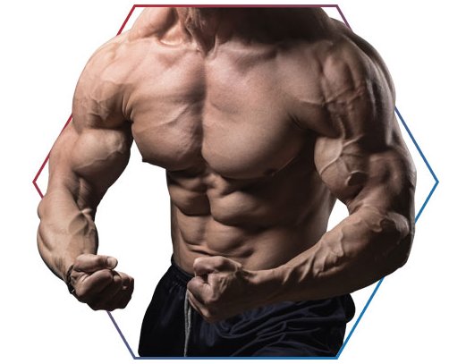

Massa muscularGanhar massa muscular é o objetivo de muitas pessoas que fazem treinos e frequentam a academia, assim como emagrecer. Com uma dieta elaborada por um profissional da área da saúde, uma rotina de exercícios físicos intensa e o consumo dos suplementos certos, é possível desenvolver os músculos de forma ainda mais eficiente. Confira agora mais informações sobre como desenvolver a hipertrofia, quais os tipos de alimentos indicados e a importância da proteína em uma dieta com o objetivo de ganhar massa muscular |
 |
Como ganhar massa muscularO processo de ganho de massa muscular se dá pela combinação de uma boa alimentação e de uma rotina de exercícios físicos intensos. Além disso, fazer musculação é muito importante para alcançar a hipertrofia, sendo indicada a realização de exercícios de grupos musculares alternados, já que o processo de desenvolvimento dos músculos ocorre durante a recuperação¹. Porém, é importante se consultar previamente com profissionais que podem guiar você da melhor maneira possível. |
|
A importância da proteina na hipertrofiaO consumo de proteína é essencial para quem deseja alcançar a hipertrofia perfeita. O consumo de alimentos ricos em proteína pode, além de gerar mais energia para os treinos, preservar as funções corporais durante os momentos de repouso e manter a integridade funcional do organismo². No entanto, o acompanhamento de uma dieta rica em proteínas deve ser feito por um profissional, para evitar que o consumo seja excessivo e prevenir o surgimento de possíveis efeitos colaterais, uma vez que o organismo consegue absorver uma quantidade certa por dia. |